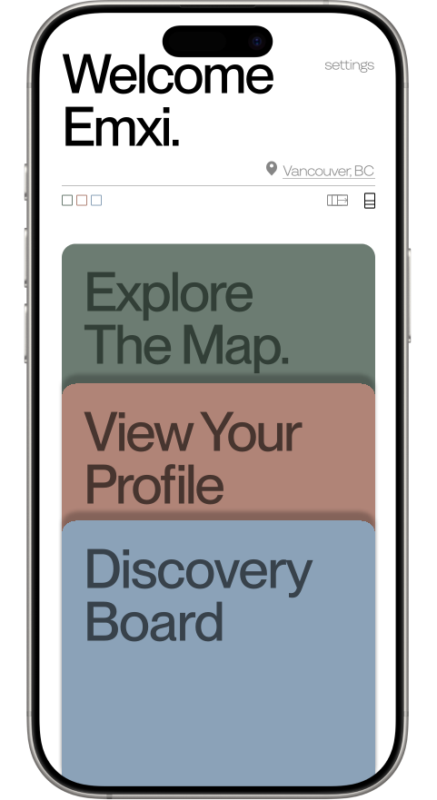
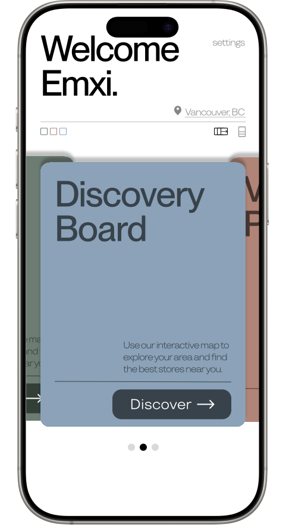
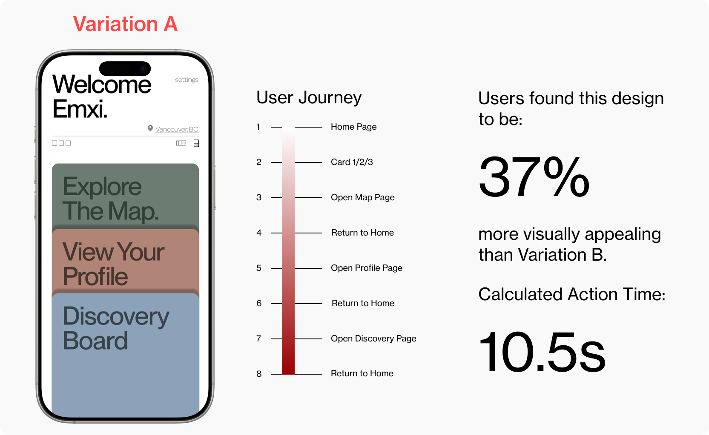
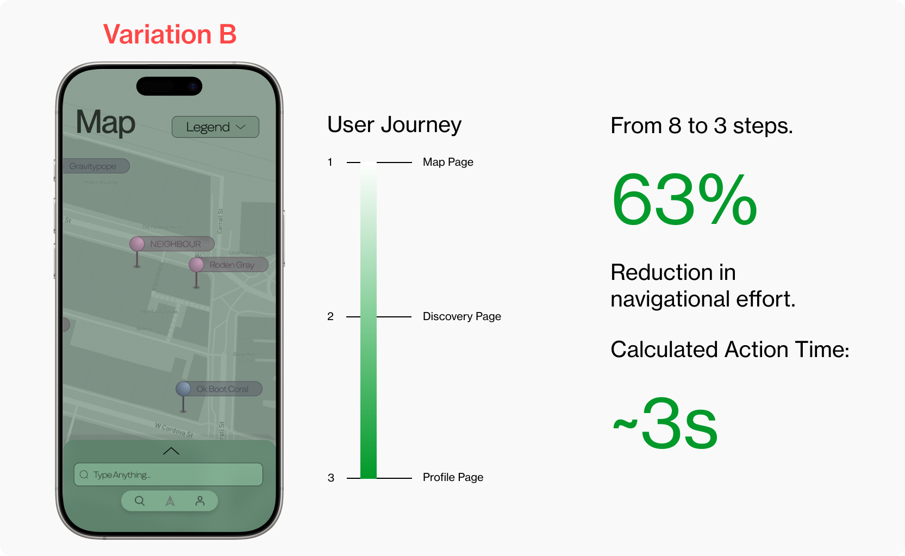
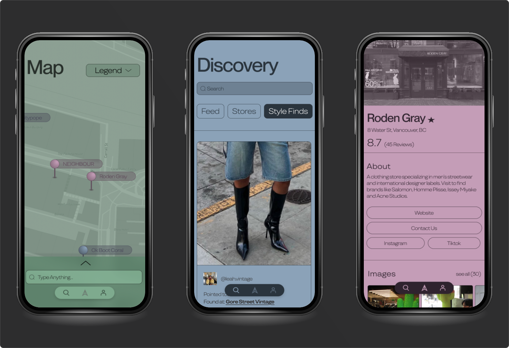

2025
BYLTE
Overview
Independent fashion retailers often struggle with visibility in a market dominated by large e-commerce platforms and social algorithms.
Consumers who want to discover unique, local fashion brands lack an intuitive way to find nearby boutiques beyond word of mouth or fragmented social media searches.
As a co-designer on Bylte, I was tasked with designing a map-based application that addresses this discovery gap by connecting fashion-conscious users to small,
location-based retailers in a more accessible and intentional way.
What I Did
User Research
User Interface Design
Prototyping
Team Members
Ethan Li
Faith Leung
Rebecca Yeung
Tirsten Lisondra (Me)
The Problem
People who want unique fashion pieces have a hard time finding small
boutiques because most shopping sites and search engines focus on big brands.
Pinterest offers an innovative ‘Shop the Look’ feature, but the curated items often don’t match the products shown in the photos.
Users often get broad results with limited relevance to niche fashion interests, requiring extra effort to find hidden gems.
Google Maps tends to prioritize larger chain stores in search results, making it difficult for users to discover small, independent boutiques.
Ideating A Solution
I conducted a week-long UXR campaign to determine what they would need from a potential solution.
As a leader in user and competitor research initiative, I looked into other map-based platforms to identify pain points and hosted a surveys both online and in person.
After gathering the results, we came up with a question to guide our design process:
How might different navigational approaches impact user engagement and satisfaction when looking for specialty fashion?
The Process – 1
To start, I decided on
3 key design principles:
1. Simple and visually clean interface prioritizing small-scale retailers.
2. High contrast between text and background for accessibility.
3. Consistent spacing and layout patterns across pages for intuitive navigation.
The Process - 2
To establish consistency across each collaborator,
I created a design system.
The Rationale
The idea of a customizable, tailored experience really spoke to me using a range of varying colors rather than two main contrasting ones.
The final colors are made to be a muted version of their base colors to be easier on the eyes of the viewers, reducing visual clutter, and overall making the application more user friendly.
The Process - 3
Collecting inspiration from mobile wallets.
I created a wallet-like home screen.


Inspired by mobile wallets, we designed a dynamic, swipeable home screen with both vertical and horizontal views to empower user choice.
Embracing Feedback and Iteration
Staying open minded during the design process allows me to create solutions that truly meet users’ needs rather than clinging to initial concepts.
The wallet concept became redundant once we introduced a bottom navigation bar – I had to let it go.


The Final Product
After the two-week sprint, heres a look at the final product.


.svg)
Reflecting Back on My Experience
Looking back at the development process, there is always room for improvement.
1.
As the sole UX researcher, I had to use surveys, competitor analysis, and persona development to validate our concept and guide design decisions.
2.
Since we were all designers we faced inconsistencies in a variety of aspects, which required extra time to fix. If I were to do this again, I would implement a stricter design system early and ensure clear ownership for components.
3.
I learned the importance of staying open-minded. Pivoting early after research led us to a more meaningful solution and reinforced that great design comes from adapting to user needs, not initial assumptions.